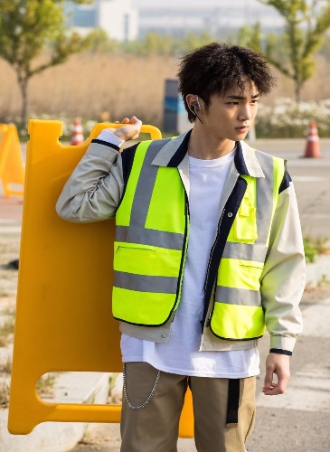

From the drama 'The Lookout' he was recently in.
| Name: | Kim Ki Bum |
|---|---|
| Stage name: | Key |
| D.O.B.: | 9-23-1991 |
- He was born in Daegu, South Korea.
- He doesn’t have siblings.
- He was raised since birth by his grandmother. (His mother was in poor health right after he was born and his father was busy with work, so his grandmother was the one who raised him.)
- Education: Dae Gu Yeong Shin Middle School
- He trained since 2005 S.M. National Tour Audition Casting.
- His nicknames are The Almighty Key, KimKey, Key Umma.
- He speaks English and Japanese.
- He is the best at speaking Japanese.
- The group’s No.1 in fashion.
- He has a love-hate relationship with horror movies and horror stories.
- He will go to the CD shop and ask, “Where are the SHINee CDs? Are they selling well?”
- Has phobia of heights.
- Since kindergarten his dream was to become a singer.
- Good at saying honeyed words, but hearing lines like “Are you hurt? I am hurting too.” makes him burst out in laughter.
- Is confident that he can be a gourmet chef.
- His hobbies are rapping, dancing, water skiiing.
- Key is in a duo band with Woohyun from Infinite, called Toheart.
- He acted in the drama Drinking Solo (2016).
- Key helped design many of the costumes that SHINee members wore at concerts.
- Key has 2 dogs. They are called Commes Des and Garçon. They are featured a lot in Key’s social media sites.
- Key is also in a drama called “Lookout”